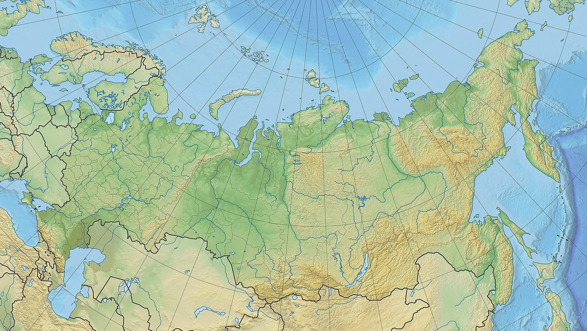
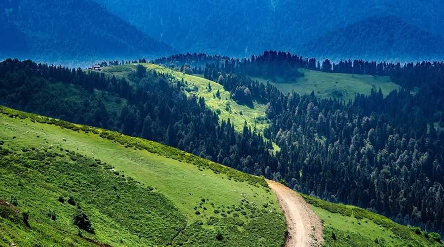

Географическое расположение
Территория России в её заявленных границах составляет 17 125 191 км
2
(первое место по площади среди стран мира), что чуть меньше континента
Южная Америка. Расположена полностью в Северном полушарии, бо́льшая часть
территории России располагается в Восточном полушарии, лишь восточная
часть Чукотского автономного округа располагается в Западном полушарии.
Омывается водами Тихого и Северного Ледовитого океанов, а также
Балтийским, Чёрным, Азовским морями Атлантического океана, обладая самой
протяжённой береговой линией в мире (37 653 км). Россия расположена на
севере материка Евразия, занимая бо́льшую часть Восточной Европы и весь
север Азии. Уральские горы и Кумо-Манычская впадина разделяют Россию на
европейскую и азиатскую части. Даже в Европе и Азии Россия является
крупнейшим по территории государством, частично располагаясь в них.
Крайней северной точкой России является мыс Флигели на острове Рудольфа
архипелага Земля Франца-Иосифа (81°51’ с. ш.), в Архангельской области,
крайняя северная материковая точка — мыс Челюскина на полуострове Таймыр
(77°43’ с. ш.), в Красноярском крае. Крайняя восточная точка — остров
Ратманова в Беринговом проливе (169°0’ з. д.), является территорией
Чукотского АО, крайняя восточная материковая точка — мыс Дежнёва на
Чукотке (169°39’ з. д.). Крайняя южная точка России находится на границе
Дагестана с Азербайджаном, к юго-западу от горы Киченсув (41°11’ с. ш.).
Крайняя западная точка лежит в Калининградской области, на Балтийской косе
Гданьского залива Балтийского моря (19°38’ в. д.). Протяжённость
территории России с запада на восток составляет почти 10 тысяч км, с
севера на юг — превышает 4 тысячи км.

Рельеф
Более 70 % территории России занято равнинами и низменностями. Западная
часть страны находится в пределах обширной Восточно-Европейской равнины,
характеризующейся чередованием низменностей (Прикаспийская и др.) и
возвышенностей (Валдайская, Среднерусская и т. д.). Меридионально
вытянутая горная система Урал разделяет Восточно-Европейскую равнину и
Западно-Сибирскую низменность. К востоку от последней находится
Среднесибирское плоскогорье с изолированными горными массивами, плавно
переходящее в Центрально-Якутскую низменность. Южная и восточная части
страны преимущественно гористые. На крайнем юге Европейской части тянутся
северные хребты Большого Кавказа (здесь находится самая высокая вершина
России Эльбрус (5642 м), на юге Сибири — Алтай, Западный и Восточный
Саяны, Становое нагорье и другие горные системы. Северо-восток Сибири и
Дальний Восток — регионы преобладания средневысотных горных хребтов, таких
как Сихотэ-Алинь, Верхоянский, Черского и т. д. Полуостров Камчатка (здесь
находится самый высокий вулкан Евразии Ключевская Сопка (4750 м) и
Курильские острова на крайнем востоке — территория вулканов. Здесь их
насчитывается более 200, причём около 50 из них действующие.

Внутренние воды
Россия — одна из наиболее водообеспеченных стран мира. Страна обладает
одними из крупнейших в мире запасами пресной воды. Поверхностные воды
занимают 12,4 % территории России, при этом 84 % поверхностных вод
сосредоточено к востоку от Урала. В структуре водопользования преобладают
производственные нужды. Самое большое пресноводное озеро Байкал
расположено в восточной части страны (около 31 700 км
2 ),
является самым глубоким озером планеты.
Крупнейшие реки
4 крупнейшие реки России
| Название |
Длина, км |
Площадь бассейна, км2
|
| Лена |
4 400 |
2 490 000 |
| Иртыш |
4 248 |
1 643 000 |
| Обь |
3 650 |
2 990 000 |
| Волга |
3 350 |
1 360 000 |
Крупнейшие озера
4 крупнейших озера России
| Название |
Площадь бассейна, км2
|
Высота над уровнем моря, м
|
Глубина, м |
| Каспийское море |
317 000 |
-28 |
1 025 |
| Байкал |
31 500 |
456 |
1 637 |
| Ладожское озеро |
17 703 |
4 |
225 |
| Онежское озеро |
9 616 |
32 |
124 |
Климат
Для климата на всей территории России характерно отчётливое разделение
года на холодный и тёплый сезоны и большие перепады температур. По
направлению на север и на восток увеличивается годовая амплитуда
температур и понижаются зимние температуры. Большая часть территорий
страны лежит в умеренном поясе, острова Северного Ледовитого океана и
северные материковые районы — в Арктическом и Субарктическом поясах,
Черноморское побережье России расположено в Субтропическом поясе. В
пределах каждого пояса наблюдается существенное изменение климата,
направленное с запада на восток (климатические области) и с севера на юг
(зональные типы климата). В восточном направлении приблизительно до 140-го
меридиана понижается зимняя температура, уменьшаются облачность,
количество осадков, циклонов и продолжительность безморозного периода,
увеличивается продолжительность зимы. Так, выделяются четыре подтипа
климата в умеренном климатическом поясе: умеренно континентальный (на
Европейской территории России), континентальный (Западная Сибирь), резко
континентальный (Восточная Сибирь, большая часть Дальнего Востока) и
муссонный (юго-восток Дальнего Востока). Самый холодный регион — север
Дальнего Востока, где в районе города
Оймякона находится «полюс холода
северного полушария» — средняя температура в январе опускается ниже −46
°C. Большая часть территории России расположена в умеренном климатическом
поясе, меньше — в арктическом климатическом поясе, ещё меньше — в
субарктическом климатическом поясе, ещё меньше — в субтропическом
климатическом поясе. На Дальнем Востоке средняя температура в январе от
−46,4 °C в Оймяконе до −10,5 °C в Находке (-12,3 °C во Владивостоке).
Среднегодовая температура по поверхности России изменяется от +14,2 °C в
Сочи и −15,5 °C в Оймяконе. Абсолютный минимум температуры на Дальнем
Востоке составляет от −67,8 °C в Верхоянске до −27,2 °C в Находке, в
Европейской части России — от −58,1 °C в Усть-Щугоре до −13.4 °C в Сочи.
Наибольшая за год продолжительность дня изменяется от 15 ч 15 мин в
Дербенте и 15 ч 21 мин в Находке 22 июня, на крайнем юге России, до 124
сут, с 22 апреля по 23 августа, на мысе Челюскин. Наименьшая за год
продолжительность дня изменяется от 9 ч 07 мин в Дербенте и 9 ч 02 мин в
Находке 22 декабря, на крайнем юге России, до 109 сут, с 29 октября по 14
февраля, на мысе Челюскин. С 15 февраля до 21 апреля и с 24 августа по 28
октября на всей материковой части России происходит смена дня и ночи. 22
июня во всей России день продолжается не менее 15 ч 09 мин, 22 декабря во
всей России день продолжается не более 9 ч 13 мин. Среднегодовая
продолжительность дня в России изменяется от 12 ч 11 мин на самой южной
точке России (для Москвы она составляет 12 ч 17 мин) до 13 ч 30 мин на
широте Северного полярного круга. Зимой почти на всей территории России (в
норме) устанавливается устойчивый снежный покров. Исключением являются
южные районы Черноморского побережья. Лето на территории страны очень
сильно отличается: в южных районах устанавливается жаркая погода, в то
время как в северных районах лишь сходит снег и исчезают заморозки. Зимой
на побережье Чёрного моря среднемесячная температура всегда положительная,
в отдельные дни температура может подняться выше +20 градусов, а на
востоке республики Саха с субарктическим климатическим поясом, в
Чокурдахе, более половины года с середины октября до середины апреля
оттепели исключены. В Оймяконе с декабря по февраль возможны морозы ниже
−60 градусов, а повышение температуры до −30 градусов в отдельные зимние
дни близко к суточному рекорду максимальной температуры. 93,1 % площади
России средняя температура самого холодного месяца в году ниже −10
градусов, и на 82 % площади России средняя температура самого холодного
месяца в году ниже −15 градусов. 39 % площади России находится в зоне
тайги, 13 % — в зоне арктической пустыни, тундры и лесотундры, 6%-в зоне
смешанных лесов, 8%-в зоне лесостепей и лиственных лесов, 5%-в зоне
степей, 1%-в зоне полупустынь, 2%-в зоне пустынь. Значительная часть
страны характеризуется вечной мерзлотой.
Климат России
| Показатель |
Янв. |
Фев. |
Мар. |
Апр. |
Май |
Июн. |
Июл. |
Авг. |
Сент. |
Окт. |
Нояб. |
Дек. |
| Абсолютный максимум °C |
22,2 |
23,8 |
30,3 |
34,0 |
37,7 |
43,2 |
45,4 |
43,5 |
41,5 |
33,7 |
29,1 |
25,0 |
| Абсолютный минимум °C |
-71,2 |
-64,4 |
-60,6 |
-46,4 |
-28,9 |
-9,7 |
-9,3 |
-17,1 |
-25,3 |
-47,6 |
-58,5 |
-62,8 |